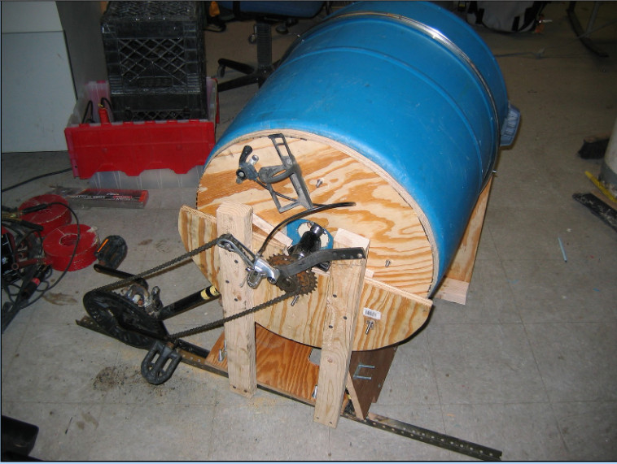
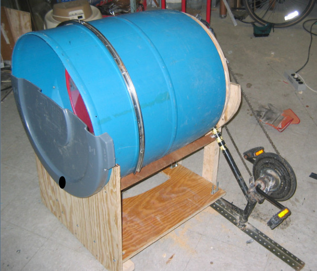
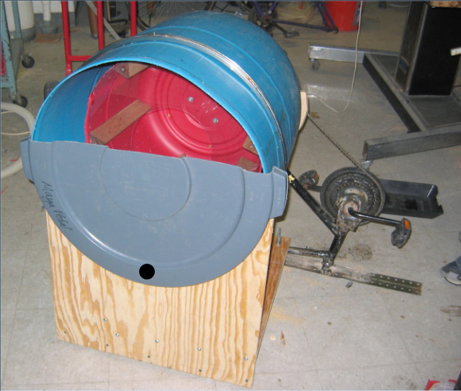
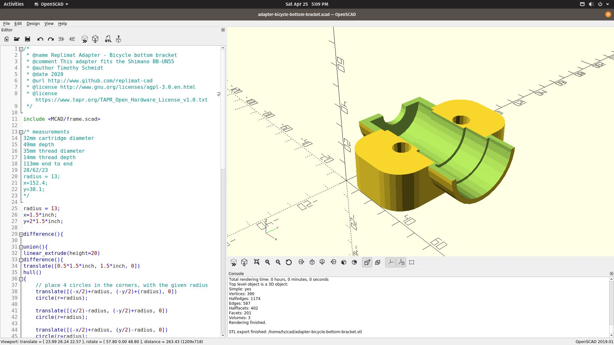
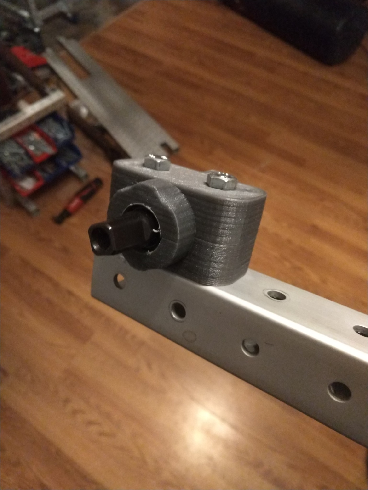
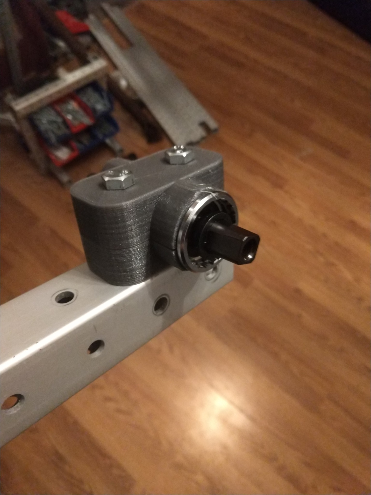
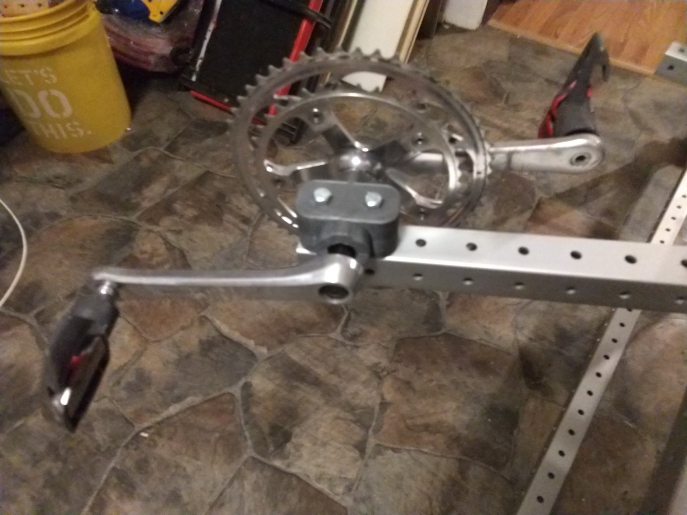

harvest spinners revision 7749
^ Projects infobox ^^
| image | Washer3.jpg |
| designers | |
| date | |
| tools | |
| vitamins | |
| materials | |
| transformations | |
| lifecycles | |
| parts | [[barrels|Barrels]], [[bicycle_bottom_brackets|Bicycle bottom brackets]], [[chains|Chains]], [[sprockets|Sprockets]] |
| techniques | [[wheels_and_axles|Wheels and axles]], [[tri_joints|Tri joints]], [[bolting|Bolting]] |
| stl | |
| git | |
Introduction
A salad spinner, also known as a salad tosser, is a kitchen tool used to wash and remove excess water from salad greens. It uses centrifugal force to separate the water from the leaves, enabling salad dressing to stick to the leaves without dilution.
Salad spinners are usually made from plastic and include an outer bowl with an inner removable colander or strainer basket. A cover, which fits around the outside bowl, contains a spinning mechanism that when initiated causes the inside strainer to rotate rapidly. The water is driven through the slits in the basket into the outer bowl. There are a number of different mechanisms used to operate the device, including crank handles, push buttons and pull-cords. The salad spinner is generally easy to use, though its large and rigid shape has been criticized by food editor Leanne Kitchen and Herald-Journal reporter Mary Hunt. A salad spinner is often considered bulky and difficult to store.
Challenges
Washing vegetable harvests to remove dirt, residues, and insects is best practice, but excess moisture must be removed before packaging or storage.
Approaches
Build a giant vegetable spinner based on this inexpensive and durable washing machine. Use only Replimat components wherever possible. Gently spin vegetables using pedal or solar electric power.
Prototype



{| class="wikitable"
|-
! Quantity !! Part !! Link
|-
| 2 || bicycle bottom bracket adapter ||
|}
Bottom bracket




References
{{:dlabfinalpresentation.pdf|}}- Wikipedia: Salad spinner